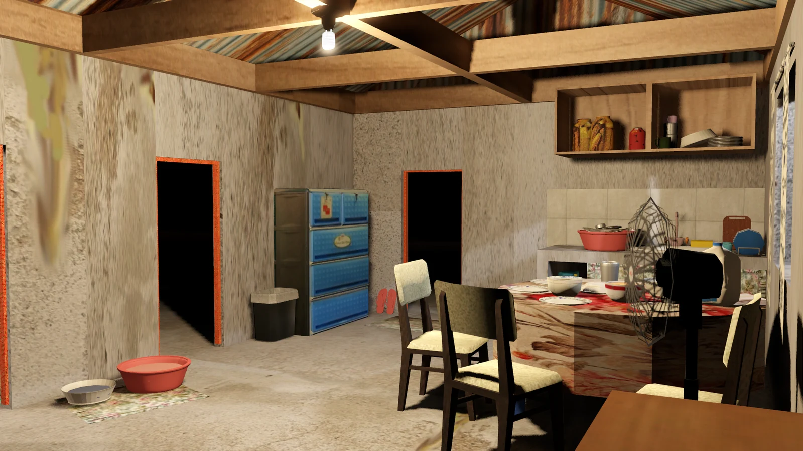

A familiar place.An approaching storm.
Game development / Godot
Bagyong Bahay
Private Windows test candidate
The decisions before
the storm arrives.
A Filipino household prepares for an approaching storm. Explore, gather supplies, and decide how to spend limited money and time.
I led the project and collaborated on its idea and mechanics. My work included much of the game architecture, map modeling, graphics, and visual direction, with teammates handling parts of the code and implementation.
Developed with substantial AI assistance. Team contributions and third-party assets remain part of the work.
Explore the environment